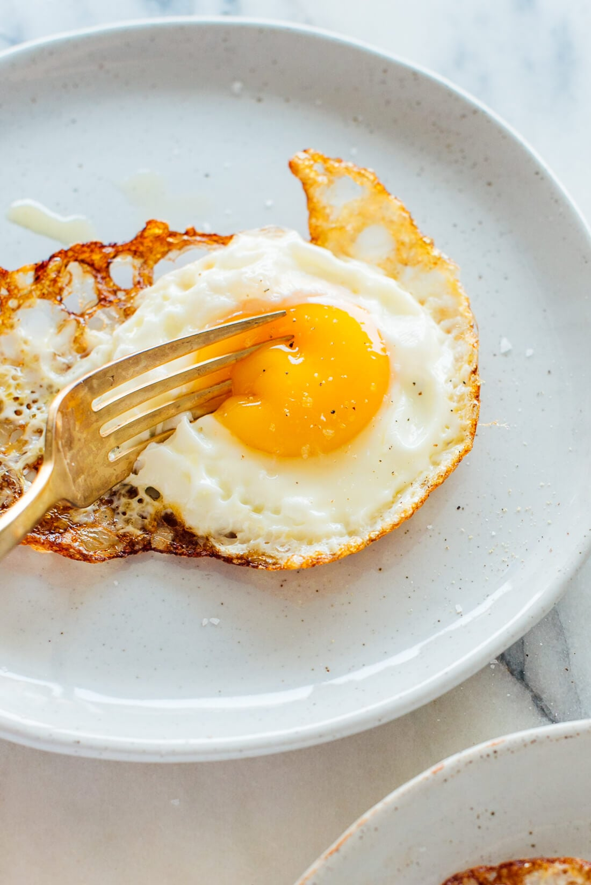

Fried Eggs Recipe
Back to Home

Description:
This is a simple and classic fried eggs recipe, perfect for a quick and satisfying meal.
I often eat this for breakfast or brunch because it is easy to make and delicious.
Ingredients:
- 2 eggs
- Salt and pepper to taste
- Olive oil for frying
Steps:
- Heat a non-stick skillet over medium heat and add olive oil.
- Crack the eggs into the skillet and cook until the whites are set and the yolks reach your desired level of doneness.
- Season with salt and pepper to taste.
- Serve hot and enjoy!